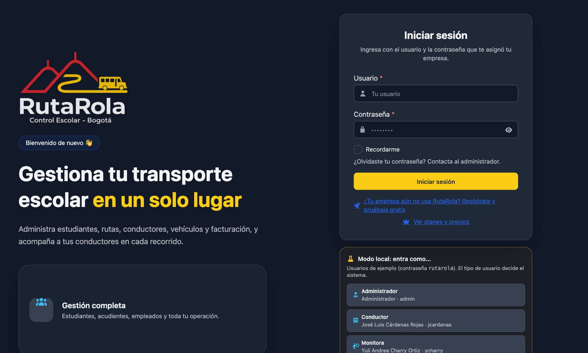
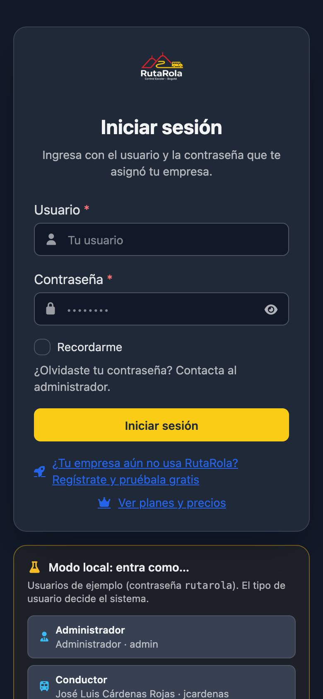
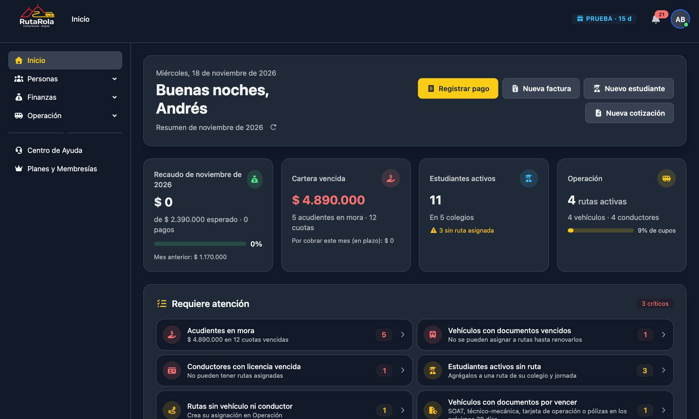
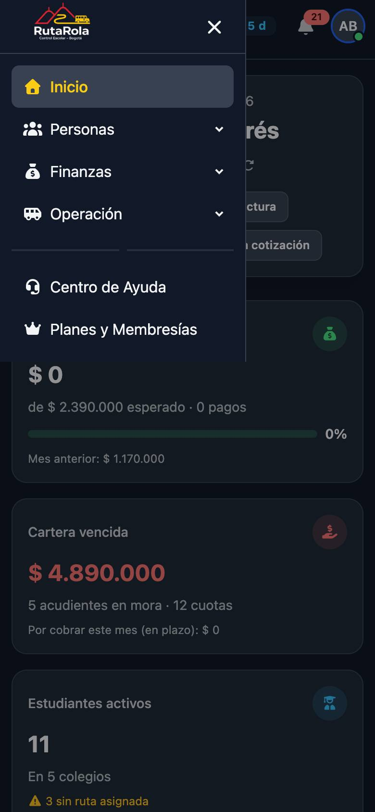
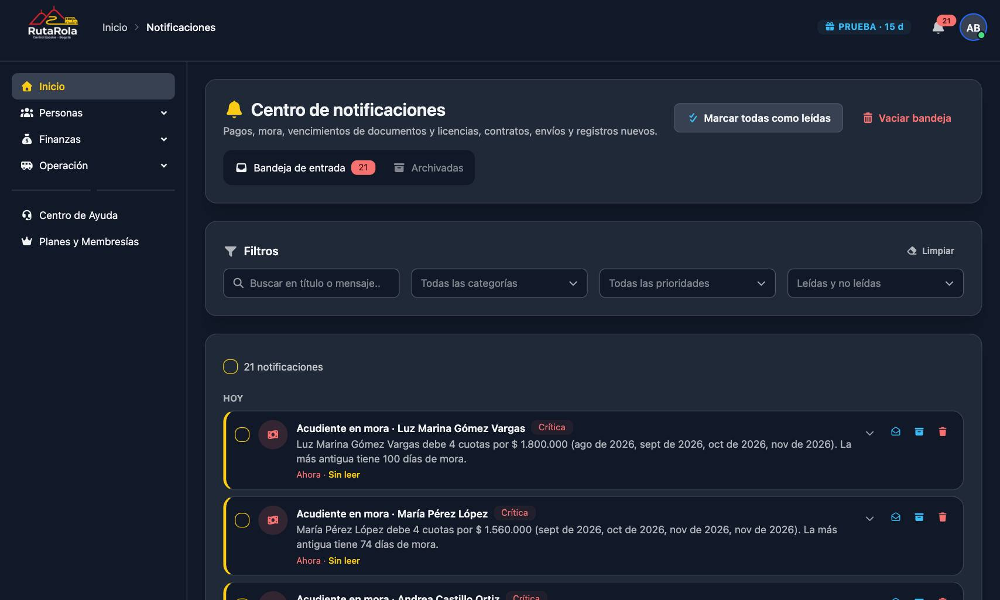
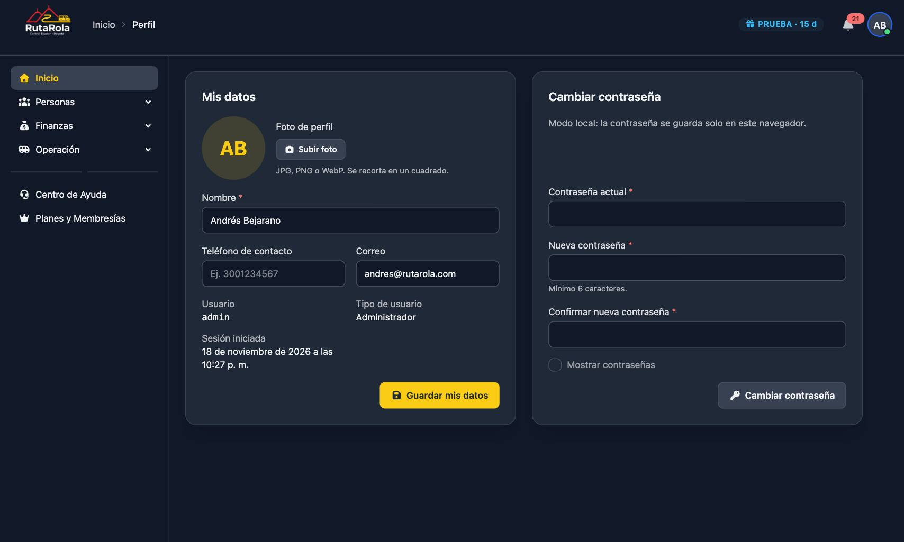
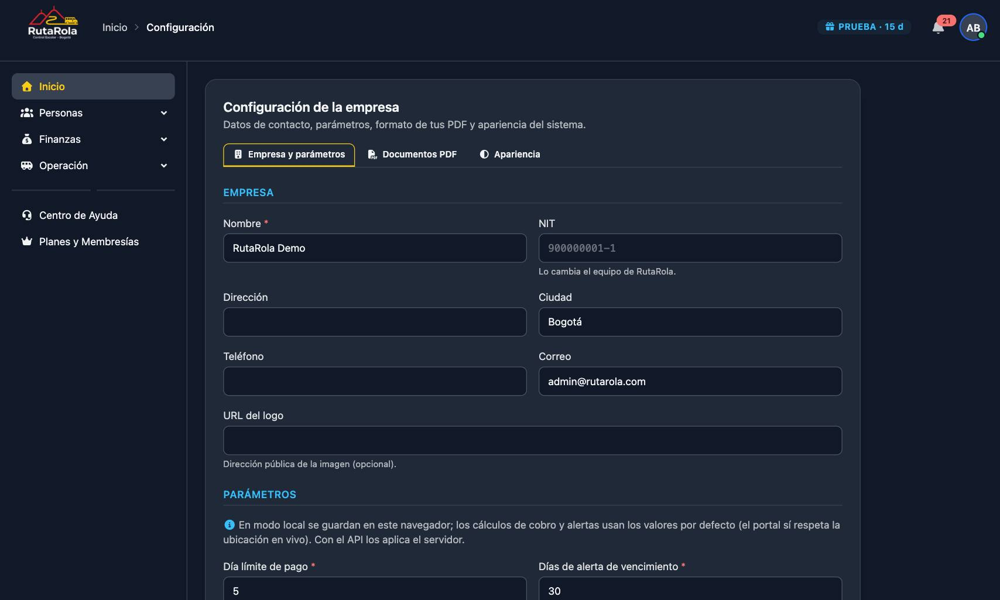
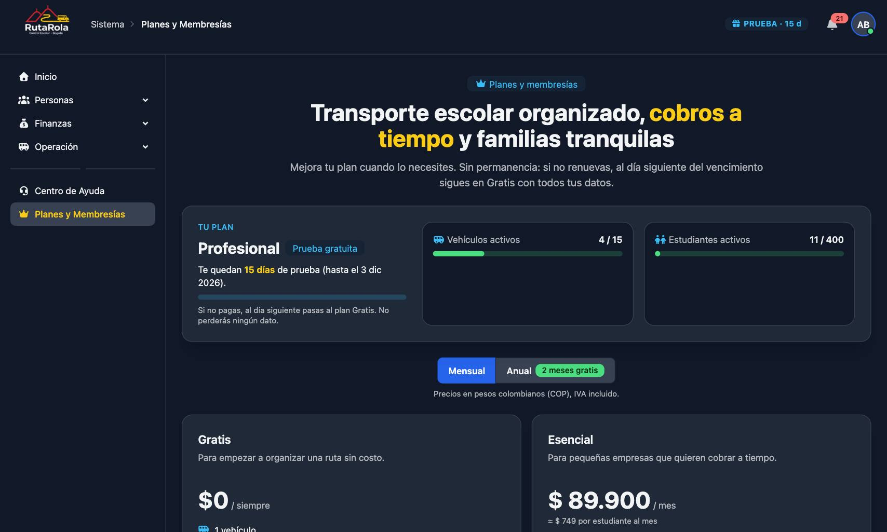
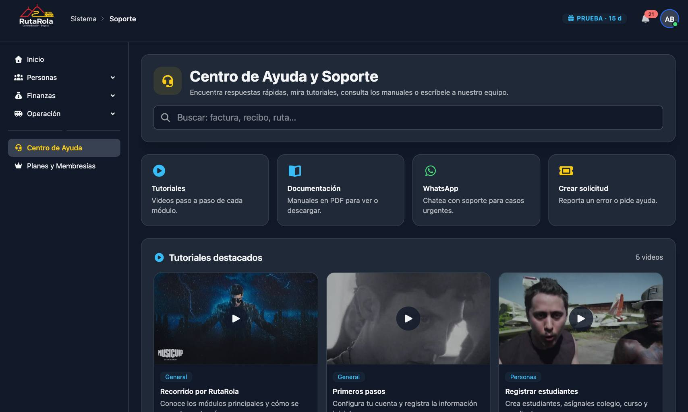

Todo lo que necesitas para empezar: cómo entrar, cómo moverte por el sistema, qué hace cada módulo y en qué orden configurar tu empresa de transporte escolar.
Para administradores, conductores, monitoras y acudientesVersión noviembre 2026
Contenido
¿Qué es RutaRola? Quién usa qué
Ingresar al sistema Web y app del celular
Conoce la pantalla Menú, barra superior, tablas y formularios
Inicio: tu tablero Indicadores y alertas
Primeros pasos Configura tu empresa en orden
Los módulos en resumen Personas, Finanzas, Operación
Notificaciones La campana
Mi perfil y Configuración
Planes y membresías
Centro de Ayuda y soporte
Glosario
¿Cómo leer este manual?
Menús: Personas › Estudiantes. Botones: Nuevo estudiante. Campos: negrita. Los campos con * son obligatorios. Cada módulo tiene además su propio manual detallado en el Centro de Ayuda.
1. ¿Qué es RutaRola?
RutaRola es el sistema para administrar una empresa de transporte escolar: estudiantes y acudientes, rutas y vehículos, el cobro mensual, y el día a día de cada recorrido con ubicación en tiempo real.
Tipo de usuario
Qué ve al entrar
Para qué lo usa
Administrador
El sistema completo con menú lateral
Registrar personas, rutas y vehículos, facturar, cobrar y supervisar la operación.
Conductor y Monitora
La Ruta del día, en el celular
Ver sus rutas de hoy, marcar a cada estudiante y compartir la ubicación.
Acudiente
El Portal del acudiente, en el celular
Ver sus hijos, la ruta de hoy, sus pagos y avisar cuando un niño no va.
Cada persona entra con su propio usuario y contraseña, y el sistema le muestra solo lo que le corresponde.
2. Ingresar al sistema
Desde el computador o el navegador del celular
Abre app.rutarola.com en Chrome, Edge, Safari o Firefox.
Escribe tu Usuario (no necesariamente un correo: es el que te asignó tu empresa) y tu Contraseña.
Marca Recordarme solo si el equipo es tuyo; así no tendrás que volver a escribirla.
Toca Iniciar sesión.

Inicio de sesión en el computador.

En el celular.
Desde la app RutaRola (Android)
Conductores y monitoras deben usar la app RutaRola instalada: es la que sigue compartiendo la ubicación aunque usen otra aplicación o bloqueen la pantalla. Se entra con el mismo usuario y contraseña.
¿Olvidaste tu contraseña?Pídele al administrador de tu empresa que te asigne una nueva. Los administradores pueden cambiar la suya en Mi perfil.
¿Tu empresa aún no usa RutaRola?
En la pantalla de inicio toca “Regístrate y pruébala gratis”: registras tu empresa y tu usuario administrador, y eliges empezar con el plan Gratis, con una prueba del plan Profesional o pagando un plan.
3. Conoce la pantalla

Pantalla principal del administrador.
Zona
Para qué sirve
Menú lateral (izquierda)
Los módulos: Inicio, Personas, Finanzas, Operación, Centro de Ayuda y Planes y Membresías. Las flechas despliegan las opciones de cada grupo.
Barra superior
Dónde estás (ej. Personas › Estudiantes), tu plan, la campana de notificaciones y tu foto: al tocarla, Mi perfil, Configuración y Cerrar sesión.
Contenido
La pantalla del módulo elegido.

En el celular, el menú se abre con el botón ☰.
Cómo funcionan todas las pantallas
Todas las listas trabajan igual, así que lo que aprendas en una sirve para todas:
Filtros arriba: escribe o elige y la lista se filtra al instante. Limpiar los quita.
Botón amarillo (ej. Nuevo estudiante): crear un registro. Siempre hay uno solo por pantalla.
Tocar una fila: consultar. Los iconos: ojo = consultar, lápiz = editar, caneca = eliminar.
Listas desplegables: escribe para buscar la opción.
Paginación abajo: páginas y filas por página.
Formularios en ventanas: los botones Cancelar y Registrar siempre quedan abajo a la vista. Si falta algo, el campo se marca en rojo con la explicación.
Mensajes verdes (todo bien) o rojos (hubo un problema) en la esquina.
Eliminar o inactivarUn registro que se usa en otro lugar (por ejemplo, un estudiante con facturas) no se puede eliminar: se deja Inactivo. Así se conserva el historial.
4. Inicio: tu tablero
Al entrar como administrador llegas a Inicio, con datos reales de tu empresa:
Accesos rápidos:Registrar pago, Nueva factura, Nuevo estudiante, Nueva cotización.
Indicadores: recaudo del mes frente a lo esperado, cartera vencida, estudiantes activos y operación (rutas, vehículos, conductores y cupos usados). Toca una tarjeta para ir al detalle.
Requiere atención: lo que debes resolver, de lo más urgente (rojo) a lo informativo: acudientes en mora, documentos y licencias vencidos o por vencer, estudiantes sin ruta, rutas sin asignación, recordatorios fallidos… Cada fila te lleva a la pantalla donde se soluciona. Si no hay nada: “Todo en orden”.
Próximos 30 días: vencimientos, fechas de pago y contratos que terminan.
Últimos pagos y gráficas de facturado contra recaudado, estudiantes por colegio y ocupación de las rutas.
5. Primeros pasos: configura tu empresa en orden
Sigue este orden la primera vez. Cada paso usa lo que creaste en el anterior.
Datos de tu empresa. En tu foto › Configuración revisa nombre, dirección, teléfono y correo; en la pestaña Documentos PDF sube tu logo para facturas y recibos.
Colegios y sus cursos.Operación › Colegios: cada colegio con sus grados, jornadas y horarios.
Vehículos.Operación › Vehículos: placa, capacidad y vencimiento de SOAT, técnico-mecánica, tarjeta de operación y pólizas.
Conductores y monitoras.Personas › Empleados, con su licencia y su usuario para la app.
Acudientes y estudiantes.Personas › Acudientes y Personas › Estudiantes. Puedes crear uno desde el formulario del otro.
Rutas.Operación › Rutas: colegio, jornada y sus estudiantes en orden de recogida.
Asignaciones.Operación › Asignaciones: vehículo, conductor y monitora de cada ruta. Desde ese momento les aparece en su Ruta del día.
Facturas.Finanzas › Facturas: el valor mensual y los meses de cada estudiante.
Recordatorios.Finanzas › Programación de facturación: el cobro automático por WhatsApp y correo.
Entrega los accesos a conductores, monitoras y acudientes.
6. Los módulos en resumen
Personas
Opción
Qué haces
Manual
Estudiantes
Registro con colegio, jornada, grado, acudiente y foto.
Gestión de estudiantes
Acudientes
Contacto, estudiantes a cargo y acceso al portal.
Gestión de acudientes
Empleados
Conductores y monitoras, licencia, contrato y acceso a la app.
Rutas y operación
Finanzas
Opción
Qué haces
Manual
Cotizaciones
Ofrecer el servicio y convertirlo en facturas.
Finanzas y facturas
Facturas
El contrato mensual de cada estudiante, su estado de cuenta y retiros.
Finanzas y facturas
Recibos
Registrar pagos completos o abonos.
Finanzas y facturas
Programación de facturación
Recordatorios automáticos de pago.
Programación de facturación
Mensajes de WhatsApp
Registro de lo que el sistema envió.
Programación de facturación
Reportes financieros
Ingresos, facturas pendientes y morosos.
Finanzas y facturas
Operación
Opción
Qué haces
Colegios, Rutas, Vehículos
La base de la operación.
Conductores
Licencias y rutas asignadas (consulta).
Asignaciones
Quién cubre cada ruta y cuándo; avisos de ausencia del día.
Recorridos
Historial de cada recogida y entrega.
Monitoreo en vivo
Mapa con los vehículos en ruta (planes Profesional y Empresarial).
Cronograma
Calendario de rutas, ausencias y vencimientos (planes Profesional y Empresarial).
El detalle de todo Operación está en el manual Rutas y operación.
7. Notificaciones
La campana de la barra superior te avisa de lo importante: pagos recibidos, facturas y cotizaciones nuevas, documentos y licencias por vencer o vencidos, contratos que terminan, acudientes en mora, recordatorios enviados o fallidos y respuestas de soporte. El número rojo indica las no leídas.

Página de notificaciones.
Toca la campana para ver las 6 más recientes, o “Ver todas” para la página completa.
Toca una notificación para abrirla; te lleva a la pantalla relacionada.
Puedes marcarlas como leídas o no leídas, archivarlas, eliminarlas o vaciar una bandeja.
Una sola vezCada hecho se notifica una vez: si eliminas una notificación, no vuelve a aparecer (salvo que la situación cambie, por ejemplo, un nuevo mes en mora).
8. Mi perfil y Configuración
Mi perfil
Toca tu foto › Mi perfil. Ahí cambias tu foto, teléfono, correo y tu contraseña (escribes la actual y la nueva; se cierran tus otras sesiones abiertas).

Mi perfil.
Configuración de la empresa
Toca tu foto › Configuración. Tiene tres pestañas:
Empresa y parámetros: datos de contacto; el Día límite de pago general (por defecto 5); los Días de alerta de vencimiento de documentos y licencias (por defecto 30); y si los acudientes ven la ubicación en vivo de la ruta.
Documentos PDF: logo, nombre comercial, color y notas de tus facturas, recibos y cotizaciones, con vista previa y Probar PDF.
Apariencia: tema oscuro o claro para todos los usuarios de tu empresa.

Configuración de la empresa.
Al terminar, toca Guardar cambios.
9. Planes y membresías

Planes y membresías.
Plan
Para quién
Incluye
Gratis
Para empezar
1 vehículo y 20 estudiantes. Sin vencimiento.
Esencial
Empresas pequeñas
5 vehículos y 120 estudiantes, recordatorios automáticos y reportes.
Profesional
Operación con seguimiento
15 vehículos y 400 estudiantes, GPS en vivo, mapa para acudientes, cronograma y soporte prioritario.
Empresarial
Flotas grandes
Sin límites y acompañamiento.
Los precios vigentes, mensuales o anuales (el anual equivale a 10 meses), están en esa misma pantalla. En la barra superior ves tu plan y los días que le quedan. Desde unos días antes del vencimiento recibes avisos; si no renuevas, tu empresa pasa al plan Gratis y no pierdes información, aunque los registros por encima del límite quedan inactivos hasta que vuelvas a un plan mayor.
¿Tienes un código promocional?Al pagar un plan, toca “¿Tienes un código promocional?” y escríbelo para ver el descuento.
10. Centro de Ayuda y soporte

Centro de Ayuda.
Tutoriales: videos paso a paso de cada módulo.
Documentación: estos manuales en PDF, para ver o descargar.
Preguntas frecuentes con buscador.
WhatsApp para casos urgentes.
Crear una solicitud de soporte
Toca Crear solicitud.
Elige el tipo (error, mejora, consulta o capacitación), el módulo y la prioridad.
Escribe un asunto corto y una descripción clara: qué hacías, qué esperabas y qué pasó. Adjunta hasta 3 capturas o PDF.
Envíala. Recibes un número (SOP-0001…) y sigues su avance en “Mis solicitudes”, donde puedes responder, confirmar que se resolvió y calificar la atención.
11. Glosario
Término
Significado
Acudiente
Padre, madre o responsable del estudiante; a quien se factura.
Asignación
Qué vehículo, conductor y monitora hacen una ruta y en qué fechas.
Curso
Grado + jornada de un colegio, con su horario.
Cuota
Cada mes que cobra una factura.
Abono
Pago parcial de una cuota.
Recorrido
Una recogida (casa → colegio) o una entrega (colegio → casa) de un día.
Retiro
Mes desde el cual un estudiante deja el servicio y ya no se le cobra.
Activo / Inactivo
Si el registro se usa hoy. Inactivar conserva el historial; eliminar lo borra.